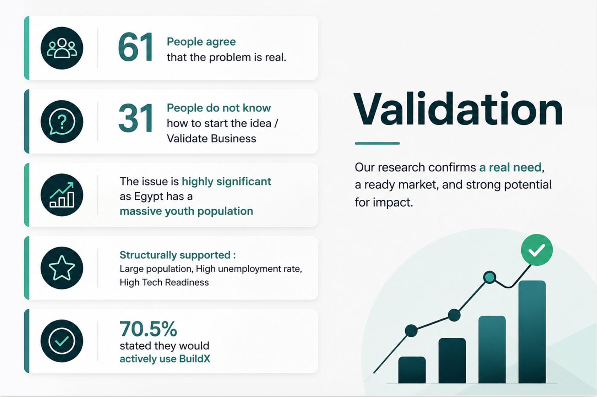
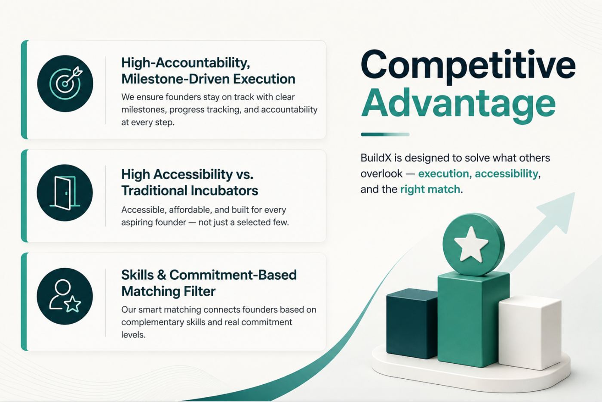

BuildX: Startup Execution Platform
A mobile app that matches young Egyptian entrepreneurs with committed co founders, then guides them through a 90 day roadmap of weekly milestones until they launch.
What I did
- Co created the idea from scratch with one teammate and led it as CEO, from concept to investor style pitch.
- Designed the full app prototype and user journey in Figma, from sign up and skills assessment to matching, progress tracking and subscriptions.
- Validated the problem with a survey of 61 young Egyptians.
- Analyzed the market with DESTEP, Porter's Five Forces and competitor mapping.
- Built a freemium and premium business model with a 200 EGP monthly subscription.
Key numbers
70.5%of people surveyed would use BuildX
50.8%did not know how to start a business
118paying users a month to break even
24 to 1lifetime value to acquisition cost
FigmaSurvey researchDESTEPPorter's Five ForcesBusiness modeling

